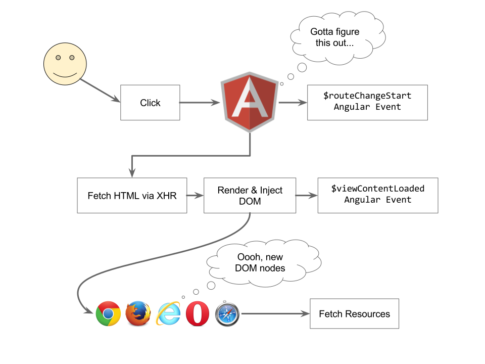
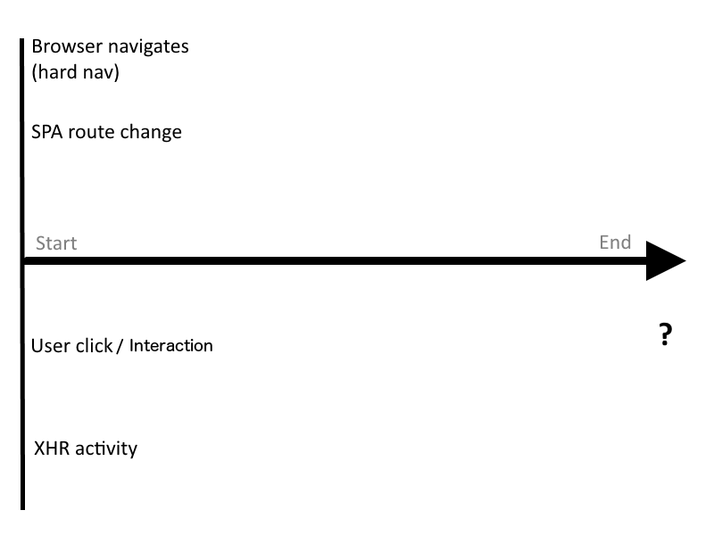

Room Service and SPAs
nic jansma | SOASTA | nicj.net | @nicj
Slides
Who Are We?
Nic Jansma
SOASTA
Philip Tellis
SOASTA
Definitions
RUM
Real User Monitoring
- Gathering performance metrics from real user experiences
- Versus Synthetic Monitoring, with emulated users in a controlled environment
RUM: How it's done
- JavaScript measures the browser's events and performance interfaces
- Listen for
readyStatechanges and theonloadevent - Measure DNS, TCP, SSL, Request and Response times from NavigationTiming and user measurements from UserTiming (if available)
- Gather User Agent characteristics (Version, Screen Size, etc)
- Listen for
- Beacon this data back to the cloud for analytics
NavigationTiming

NavigationTiming
ResourceTiming

ResourceTiming
ResourceTiming
Boomerang
- Created by Philip Tellis @ Yahoo
- Gathers performance metrics and characteristics of page load and beacons data to your server (aka RUM)
- Open-source project (with contributions from SOASTA)
- https://github.com/lognormal/boomerang/
SPAs
Single Page Apps
- Run on a single page, dynamically bringing in content as necessary
- Built with frameworks like AngularJS, Ember.js, Backbone.js, React, etc.
SPAs
Hard vs. Soft Navigations
- Hard Navigation: The first page load, which will include all static HTML,
JavaScript, CSS, the SPA framework itself (e.g.
angular.js), plus showing the initial route - Soft Navigation: Any subsequent route (address bar) change
- Any URL might be loaded via either hard or soft navigation
3 Challenges
of Measuring the Performance of SPAs
Challenge #1
The onload event no longer matters
Traditional websites:
- On navigation, the browser begins downloading all of the JavaScript, CSS, images and other static resources
- Once all static resources are fetched, the body's
onloadevent will fire - This is traditionally what websites consider as page load complete
- This is traditionally what RUM measures
Traditional website Waterfall
Challenge #1
The onload event no longer matters
Single Page Apps:
- Load all static content like a traditional website
- The frameworks' code will also be fetched (e.g.
angular.js) - (the
onloadevent fires here) - Once the SPA framework is loaded, it starts looking at routes, fetching views and data
- All of this content is fetched after the
onloadevent
SPA Waterfall

SPA Waterfall
- Browser fires
onloadat 1.225 seconds - All visual resources (.jpgs) aren't complete until after 1.7 seconds
- Filmstrip confirms nothing is shown until around 1.7 seconds
onloadfired 0.5 seconds too early!
Challenge #1
The onload event no longer matters
Single Page Apps:
- Core problem is that most of the interesting stuff (e.g. fetching Images, JavaScript,
CSS and XHRs for the route) happens after the
onload - The browser doesn't fire any "fully loaded"-style events after
onload
Challenge #2
Soft navigations are not real navigations
- Each route change, user interaction, or visual update is dynamically fetched from the server
- There are APIs to change the URL (and detect changes) in the address bar without actually navigating
- New content is dynamically swapped in over the old content
- The browser is no longer doing a traditional navigation, where it's tearing down the old page
Challenge #2
Soft navigations are not real navigations
- This is great for performance
- The browser is no longer re-rendering the same header, footer or common components
- The browser is no longer re-parsing the same HTML, JavaScript and CSS
Challenge #2
Soft navigations are not real navigations
Bad for traditional RUM tools:
- Stop caring after the measuring the "one" navigation
- Won't run again until the next time it loads on a full navigation
- Browser events (
readyState,onload) and metrics (NavigationTiming) are all geared toward a single load event
Challenge #3
The browser won’t tell you when all resources have been downloaded
- The browser fires
onloadonly once - The
onloadevent helps us know when all static content was fetched - In a soft navigation scenario, the browser does not fire the
onloadevent again, so we don't know when its content was fetched
SPA Waterfall
Challenge #3
The browser won’t tell you when all resources have been downloaded
SPA soft navigations may fetch:
- Templates
- Images
- CSS
- JavaScript
- XHRs
- Videos
Challenge #3
The browser won’t tell you when all resources have been downloaded
SPA frameworks often fire events around navigations. AngularJS events:
$routeChangeStart: When a new route is being navigated to$viewContentLoaded: Emitted every time the ngView content is reloaded
But neither of these events have any knowledge of the work they trigger, fetching new IMGs, CSS, JavaScript, etc!
Angular Timeline
AngularJS Event Waterfall
How can we measure SPA navigations?
We need to figure out at what point the navigation started (the start event), through when we consider the navigation complete (the end event).
The Start Event
For hard navigations:
- The start event is when the browser starts the process of loading the next page
- This is the same time as with traditional web app navigations
- We can use NavigationTiming's
navigationStartif available, to know when the browser navigation began - If NavigationTiming isn't available, and the user is navigating between pages on the same site, you can use cookies to measure when the navigation began (see Boomerang for an implementation)
The Start Event
Challenge #2: Soft navigations are not real navigations
- We need to figure out when the user's view is going to significantly change
- The browser history is changing
- SPA framework routing events can give us an indicator that the view will be changing
- Other important events that might indicate a view change are a user click, or an XHR that triggers DOM changes
The Start Event: History State
The window.history object can tell
us when the URL is changing:
- When
pushStateorreplaceStateare being called, the app is possibly updating its view - When the user hits Back or Forward, the
window.popstateevent is fired, and the app will possibly update the view - (future events will give us more info)
The Start Event: Routing
SPA frameworks fire routing events when the view is changing:
- AngularJS:
$rootScope.$on("$routeChangeStart") - Ember.js:
beforeModelorwillTransition - Backbone.js:
router.on("route")
The Start Event: Clicks
- When the user has clicks something, they might be doing simple interactions (e.g. a drop-down menu)
- Or, they might be triggering a UI update
- (future events will give us more info)
The Start Event: XHRs
- An
XMLHttpRequest(network activity) might indicate that the page's view is being updated - Or, it could be a periodic poller (e.g. a scoreboard update)
- Or, it could be in reaction to a user interaction (e.g. autocomplete)
- (future events will give us more info)
The Start Event
- To determine if a user click or XHR is really triggering a navigation, we can listen to what happens next
- If there was a lot of subsequent network activity, we can keep on listening for more events
- If history (address bar) changed, we can consider the event the start of a navigation
- If the DOM was updated significantly, we can consider the event the start of a navigation
- If nothing else happened, it was probably just an insignificant interaction
SPA Navigations
The End Event
When do we consider the SPA navigation complete?
There are many definitions of complete:
- When all networking activity has completed
- When the UI is visually complete (above-the-fold)
- When the user can interact with the page
The End Event
Traditional RUM measures up to the onload event:
- This is when all resources have been fetched
- The page isn't fully loaded until at least then
- The UI might have been above-the-fold visually complete already
- It's traditionally when the user can fully interact with the page
Single Points of Failure (SPOFs)
Which resources could affect visual completion of the page?
- External JavaScript files
- External CSS files
- Media (images, video)
The End Event
For hard navigations, the onload event no longer matters (Challenge #1)
- The
onloadevent only measures up to when all static resources were fetched - The SPA framework will be dynamically loading its UI only after the static JavaScript has been loaded
- We want to mark the end of the hard navigation only after all of the resources were fetched and the UI is complete
The End Event
For soft navigations, the browser won’t tell you when all resources have been downloaded (Challenge #3)
- The
onloadonly fires once on a page - APIs like ResourceTiming can give you details about network resources after they've been fetched
- But to know when to stop, we need to know if there are any outstanding resources
- So let's monitor all network activity!
The End Event
Let's make our own SPA onload event:
- Similar to the body
onloadevent, let's wait for all network activity to complete - This means we will have to intercept both implicit resource fetches (e.g. from new DOM elements) as well as programmatic (e.g. XHR) resource fetches
Monitoring XHRs
XMLHttpRequests play an important role in SPA frameworks
- XHRs are used to fetch HTML, templates, JSON, XML, data and other assets
- We should monitor to see if any XHRs are occuring
- The
XMLHttpRequestobject can be proxied - Intercept the
.open()and.send()methods to know when an XHR is starting
Monitoring XHRs
Simplified code ahead!
Full code at github.com/lognormal/boomerang/blob/master/plugins/auto_xhr.js
Monitoring XHRs
var orig_XHR = window.XMLHttpRequest;
window.XMLHttpRequest = function() {
var req = new orig_XHR();
orig_open = req.open;
orig_send = req.send;
req.open = function(method, url, async) {
// save URL details, listen for state changes
req.addEventListener("load", function() { ... });
req.addEventListener("timeout", function() { ... });
req.addEventListener("error", function() { ... });
req.addEventListener("abort", function() { ... });
orig_open.apply(req, arguments);
};
req.send = function() {
// save start time
orig_send.apply(req, arguments);
}
}
Monitoring XHRs
By proxying the XHR code, you can:
- Know which URLs are being fetched
- Know when a XHR has started
- Know when a XHR has completed, timed out, error or aborted
- Measure XHR states even on browsers that don't support ResourceTiming
- Most importantly, know if there are any outstanding XHRs
Monitoring XHRs
Downsides:
- Need additional code to support XDomainRequest
- Timing not as accurate when browser is busy (rendering, etc) as callbacks will be delayed
- You can fix-up timing via ResourceTiming (if available)
Other Resources
XHR is the main way to fetch resources via JavaScript
- What about Images, JavaScript, CSS and other HTML elements that trigger resource fetches?
- We can't proxy the
Imageobject as that only works if you create anew Image()in JavaScript - If only we could listen for DOM changes...
Mutation Observer
http://developer.mozilla.org/en-US/docs/Web/API/MutationObserver:
MutationObserver provides developers a way to react to changes in a DOM
Usage:
observe()for specific events- Get a callback when mutations for those events occur
Mutation Observer
Simplified code ahead!
Full code at github.com/lognormal/boomerang/blob/master/plugins/auto_xhr.js
var observer = new MutationObserver(observeCallback);
observer.observe(document, {
childList: true,
attributes: true,
subtree: true,
attributeFilter: ["src", "href"]
});
function observeCallback(mutations) {
var interesting = false;
if (mutations && mutations.length) {
mutations.forEach(function(mutation) {
if (mutation.type === "attributes") {
interesting |= isInteresting(mutation.target);
} else if (mutation.type === "childList") {
for (var i = 0; i < mutation.addedNodes.length; i++) {
interesting |= isInteresting(mutation.addedNodes[i]);
}
}
});
}
if (!interesting) {
// complete the event after N milliseconds if nothing else happens
}
});
Mutation Observer
Simplified workflow:
- Start listening when an XHR, click, route change or other interesting navigation-like event starts
- Use
MutationObserverto listen for DOM mutations - Attach
loadanderrorevent handlers and set timeouts on anyIMG,SCRIPT,LINKorFRAME - If an interesting element starts fetching keep the navigation "open" until it completes
- After the last element's resource has been fetched, wait a few milliseconds to see if it kicked off anything else
- If not, the navigation completed when the last element's resource was fetched
Mutation Observer
What's interesting to observe?
- Internal and cached resources may not fetch anything, so you have to inspect elements first
IMGelements that haven't already been fetched (naturalWidth==0), have external URLs (e.g. notdata-uri:) and that we haven't seen before.SCRIPTelements that have asrcsetIFRAMEselements that don't havejavascript:orabout:protocolsLINKelements that have ahrefset
Mutation Observer
Downsides:
- Not 100% supported in today's market
- Can't be used to monitor all resources (e.g. fonts from CSS)
Mutation Observer
Polyfills (with performance implications):
Why not ResourceTiming?
Doesn't ResourceTiming have all of the data we need?
- ResourceTiming events are only added to the buffer after they complete
- In order to extend the SPA navigation end time, we have to know if any resource fetches are outstanding
Mutation Observer
Polyfill ResourceTiming via MutationObserver
For extra credit, you could use the data you gathered with Mutation Observer to create a Waterfall for browsers that don't support ResourceTiming but do support MutationObserver (e.g. iOS).
Mutation Observer
Polyfill ResourceTiming via MutationObserver
FrontEnd vs. BackEnd
In a traditional page load:
FrontEnd vs. BackEnd
Traditional websites:
- Back-End: HTML fetch start to HTML response start
- Front-End:
Total Time - Back-End
FrontEnd vs. BackEnd
Single Page Apps:
- Depends on your application's patterns, but...
- Back-End: Any timeslice with an XHR outstanding
- Front-End:
Total Time - Back-End
Monitoring Page Components
It's not just about navigations
What about components, widgets and ads?
- You can apply the previous techniques to page components
- For measuring performance, you need a start time and an end time
- The start time is probably driven by your code (e.g. a XHR fetch) or a user interaction (e.g. a click)
- The end time can be measured via XHR interception, MutationObservers, or callbacks from your resource fetches
Monitoring Page Components
How do you measure visual completion?
Challenges:
- When an
IMGhas been fetched, that's not when it's displayed to the visitor (it has to decode, etc.) - When you put HTML into the DOM, it's not immediately on the screen
Monitoring Page Components
Use setTimeout(..., 0) or setImmediate to get a callback after the browser has finished
parsing some DOM updates
var xhr = new XMLHttpRequest();
xhr.open("GET", "/fetchstuff");
xhr.addEventListener("load", function() {
$(document.body).html(xhr.responseText);
setTimeout(function() {
var endTime = Date.now();
var duration = endTime - startTime;
}, 0);
});
var startTime = Date.now();
xhr.send();
Monitoring Page Components
This isn't perfect:
- The browser may be doing layout, rendering or drawing async or on another thread
- But it's better than ignoring all the work the browser has to do to render DOM changes
Lifecycle
What happens over time?
How well does your app behave?
Lifecycle
It's not just about measuring interactions or how long components take to load
Tracking metrics over time can highlight performance, reliability and resource issues
Lifecycle
You could measure:
- Memory usage:
window.performance.memory(Chrome) - DOM Length:
document.documentElement.innerHTML.length - DOM Nodes:
document.getElementsByTagName("*").length - JavaScript errors:
window.onerror - Bytes fetched:
ResourceTiming2orXHRs - Frame rate:
requestAnimationFrame
The future!
OK, that sounded like a lot of work-arounds to measure Single Page Apps.
Yep.
Why can't the browser just tell give us performance data for SPAs in a better, more performant way?
Listening for Resource Fetches
Instead of instrumenting XMLHttpRequest and using MutationObserver to find new
elements that will fetch:
- W3C Fetch standard
- https://fetch.spec.whatwg.org/
- A Fetch Observer (https://github.com/whatwg/fetch/issues/65) that notifies us when a resource fetch starts/stops
- Less overhead than MutationObserver
- Tracks all resources rather than just DOM elements from MutationObserver
Thanks!
slideshare.net/nicjansma/ - @nicj - @bluesmoon
soasta.io/SPAperfbook